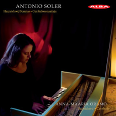
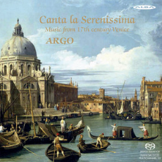
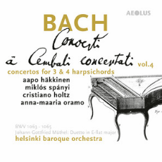
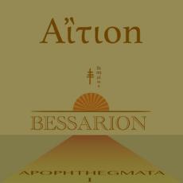
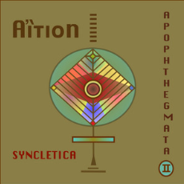

Antonio Soler: Harpsichord Sonatas (Alba, 2013)
Anna-Maaria Oramo, harpsichord
"She not only offers large-scale contrast - she's also alert to the quicksilver wit in the details” Martin Anderson, Finnish Music Quarterly
”Myötäsyntyisellä musikaalisuudellaan, hienostuneella tyylitajullaan ja varmalla tekniikallaan Oramo puhaltaa Solerin musiikkiin uutta luovaa henkeä.” Risto Nordell, Kirkko ja Kaupunki

Canta la Serenissima - Music from 17th Century Venice (Alba, 2014)
Kajsa Dahlbäck, soprano and Argo Ensemble
“The five players and soprano Kajsa Dahlback are clearly very comfortable with the Venetian style, and they have chosen music of the highest quality-by nine composers-to demonstrate their strengths.
In the 17th Century, violinists strove to emulate the voice, and Argo shows just how well the violin can reach this ideal.
Virtuoso writing for dulcian was very new at the time, and Jani Sunnarborg produces an effortless sweet sound right up and down the whole register to stunning effect.
Two solo harpsichord pieces (by Picchi and Merulo) are extremely well played by Anna-Maaria Oramo.”
C MOORE / American Record Guide

J.S. Bach: Concertos for 3 and 4 harspichords (Aeolus, 2020)
Aapo Häkkinen, Miklós Spanyi, Cristiano Holz, Anna-Maaria Oramo, harpsichord
Diapason d’Or prize 2020
Drei oder vier hochkarätige Cembalisten lassen sich nicht so ohne weiteres zusammenbringen.
Entsprechend selten hört man diese Concerti für mehrere Cembali im normalen Konzertalltag.
In die Bresche sprang die Plattenindustrie offenbar seit jeher gerne und legte zahlreiche qualitativ hochwertige Einspielungen vor.
Die Mitglieder des hier solistisch besetzten Helsinki Baroque Orchestra schlagen sich in diesem Umfeld recht wacker.
Und natürlich erfreuen die drei beziehungsweise vier Solisten durch ihr technisch und musikalisch perfektes Zusammenspiel.
Reinmar Emans, Fono Forum

Aition Apophthegmata I Bessarion (2021)
Tunnelmallisuus, seesteinen eteerisyys ja vahvasti akustisuuden puolelle kääntyvä soundimaailma tekevät yhtyeestä periaatteessa
Dead Can Dancenkin jalanjäljissä kulkevan herkistelijän. Kuulaat naisvokaalit, vanhojen soitinten kuten clavicymbalumin, dulcimerin
ja harpun hienostuneet äänet, sekä tietysti äärimmäisen rauhallinen musiikin virta luovat yhdessä hypnoottisen tunnelman,
jota säästeliäästi lisätyt kellot ja muut pienet yksityiskohdat rikastavat.
Mika Roth, Desibeli
 Aition Apophthegmata II Syncletica (2022)